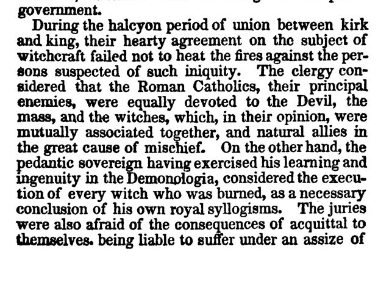

“The halcyon period of union between kirk and king” (Letter IX, p. 261)
English: New York 1830, p. 261, scan. Highlighted: Lecky’s quotation.

… At his departing from Scotland, on his romantic expedition to bring home a consort from Denmark, he very politically recommended to the clergy to contribute all that lay in their power to assist the civil magistrates, and preserve the public peace of the kingdom. The king, after his return, acknowledged, with many thanks, the care which the clergy had bestowed in this particular. Nor were they slack in assuming the merit to themselves, for they often reminded him, in their future discords, that his kingdom had never been so quiet as during his voyage to Denmark, when the clergy were, in a great measure, intrusted with the charge of the public government.
During the halcyon period of union between kirk and king, their hearty agreement on the subject of witchcraft failed not to heat the fires against the persons suspected of such iniquity. The clergy considered that the Roman Catholics, their principal enemies, were equally devoted to the Devil, the mass, and the witches, which, in their opinion, were mutually associated together, and natural allies in the great cause of mischief. On the other hand, the pedantic sovereign having exercised his learning and ingenuity in the Demonologia, considered the execution of every witch who was burned, as a necessary conclusion of his own royal syllogisms. The juries were also afraid of the consequences of acquittal to themselves, being liable to suffer under an assize of error …
Lecky has “against all persons suspected”; Scott “against the persons suspected”.
Backlinks
Every place in Rationalism in Europe that links to this page (generated automatically when the site is built).
- Chapter I: note 163